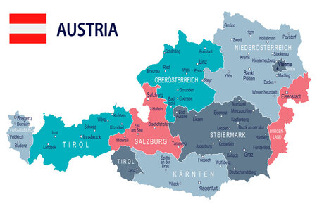

Discover the People
Learn about history and customs of the Austrian people!
Where to visit
Learn about the places you don't want to miss!
The country and its people whisper of a time almost forgotten through its culture and values that echo through the ages. The grandeur of the monarchy with its riches and influence faded, the people and the beauty stayed and became a hidden jewel to be discovered and treasured. Be prepared to leave a part of your heart behind, but to leave richer for it. Spend a day in a picturesque alpine village, located in the Eastern Alps, in the province of Tyrol, or visit the birthplace of Mozart, in the romantic city of Salzburg, go on a river tour along the Danube through the heart of Austria's capital Vienna, and stop at Hochosterwitz Castle, an unconquered fortress in the province of Carinthia. Throughout history many warring peoples occupied this central European region, they all left their mark, but the Austrian heart remained true to its roots - warm and welcoming, with rich customs that fill holidays, festivals and the homes of the young and the elderly. Are you ready to visit Austria and to allow some of its heritage to rub off on you?
The German-Austrian actor Christoph Waltz said:"The beauty of Austria lies not only in its landscapes but also in its people, who radiate warmth, hospitality, and a love for their heritage." In a world, where change seems to be the only constant, lies Austria, with deep roots and an open invitation to you.
So much is packed into Austria. The history of Austria is bloody, hence the flag of the Austrian Republic was born in battle as Duke Leopold V, drenched in blood, removed his belt and saw that the linen underneath was still white. Find out why this area in the heart of Europe is so coveted.